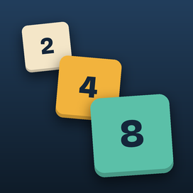
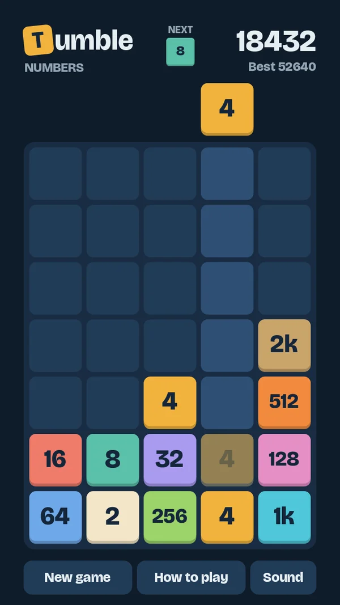
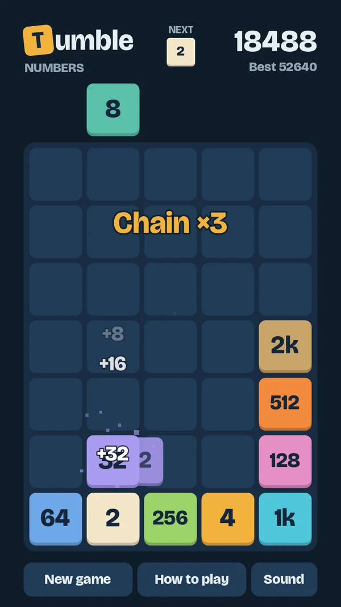
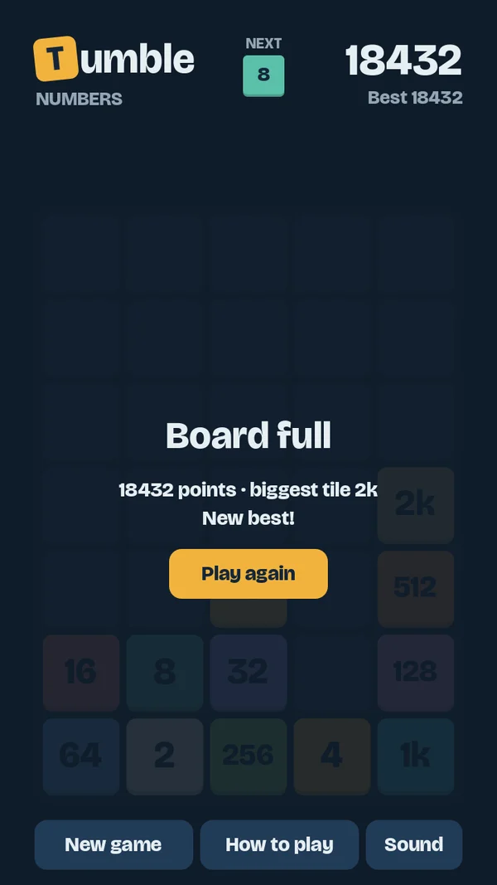

Tumble NumbersDROP · MERGE · CHAIN
Slipp tall ned i kolonnene. Like tall som havner inntil hverandre, slår seg sammen og dobles – og faller videre, så ett godt slipp kan sette i gang en hel kjedereaksjon.
Drop numbers into the columns. Matching numbers that touch merge and double – and keep tumbling, so one good drop can set off a whole chain reaction.



Én enkel regelOne simple rule
Like tall som møtes, slås sammen og dobles. To like naboer på én gang gir fire ganger så mye, tre gir åtte.
Matching numbers that touch merge and double. Two matching neighbours at once make it four times as big, three make it eight.
KjedereaksjonerChain reactions
Sammenslåtte tall faller ned og kan slå seg sammen igjen. Planlegg slippet, og se det tumle.
Merged numbers fall and can merge again. Plan your drop and watch it tumble.
Ingen klokkeNo timer
Tenk så lenge du vil. Du ser tallet du slipper og det neste, og spillet lagres etter hvert trekk.
Take your time. You see the number you're dropping and the next one, and the game is saved after every move.
For hele familienFor the whole family
Ingen konto, ingen innlogging og ingen kjøp. På norsk, engelsk, tysk, polsk, fransk og spansk. En kort reklame etter hvert ferdige spill, med innhold som passer for alle.
No account, no sign-in and no purchases. In English, Norwegian, German, Polish, French and Spanish. A short ad after each finished game, with content suitable for everyone.